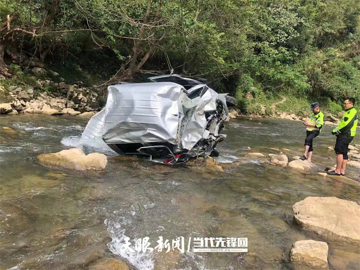
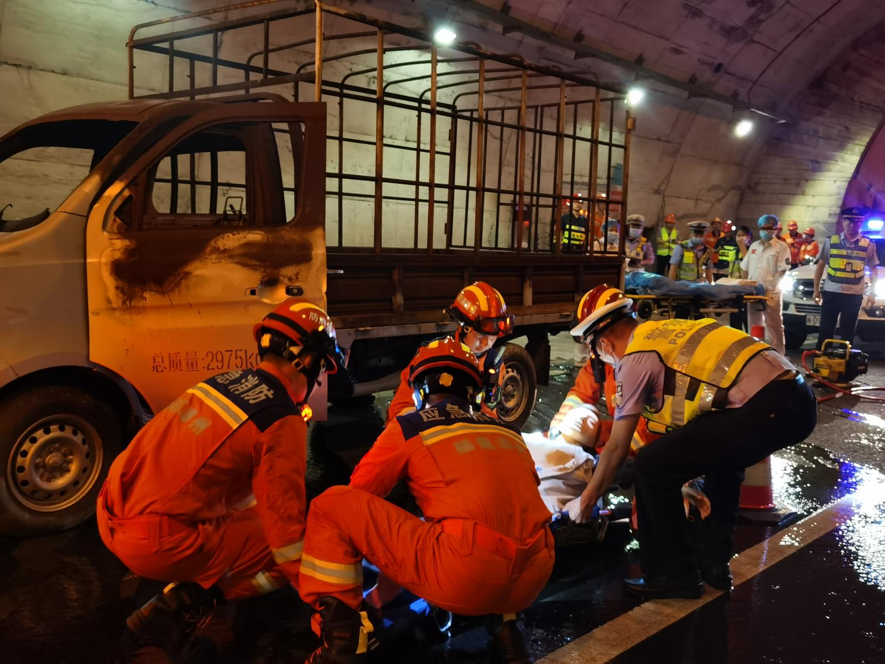

蜜月路上,一辆侧翻的事故车横在悬崖边,一对新婚夫妻的车停了下来。这是常州一对刚结婚的小夫妻,蜜月途中撞上的一幕。

丈夫没多想,突然停车,撇下新婚妻子,冲向那辆侧翻在悬崖边的事故车。妻子望着他的背影消失在路边,转头跑向反方向,去寻更多支援。
一个小时后,丈夫满身泥泞地回来。妻子没有一句抱怨。
实话说,冲上去这动作值得敬,但悬崖边救人,光有热血不够,有几道科学关得把住:
这四道关,核心就一条——先保证现场安全,再谈救人。很多人栽就栽在跳过第一步、直接上手。悬崖边的事故车不是平地,二次翻动、坠崖、起火,每一项都能把救人者变成被救者。

我们看这对夫妻的分工,其实暗合了救援里最被忽视的一条——一个人冲上去救,一个人去搬救兵。很多人遇险第一反应是闷头干,忘了求助本身也是救援的一半。会喊救命,和会救人一样值钱。
代价这边也得算。一个刚结婚的人冲向悬崖边的事故车,万一车辆二次翻动、起火,搭上的可能是两个家庭。勇气可敬,但勇气和风险之间,差的往往就是那几道科学关——能不能先设警示、先判车况,决定了这是英雄故事还是二次伤亡。
泥泞的丈夫回来了,妻子没说话,递了瓶水。两个人又上了自己的车,继续这趟被打断的蜜月。
悬崖边那个背影,和反方向跑着的那个身影,是新婚这条路上,最深的一道画面。